Prototype Gate 2 · r2 — Scenes 2–4, every beat at its settled state
All 19 builds mounted cold and captured settled. Every settled state is an approved cell of the
beat-state sheet, matched per pixel by the landed-state proof (landed-proof.json) — derivation is banned. The
presenter's review medium is the live prototype: ?proto=gate2 on the dev server, beat by beat, forward and
backward, motion-on and reduced-motion; birth treatment via ?birth=1|2|3 or keys 1/2/3 on Scene 3 (the ruled
default is pool).
Scene 2 — The Direct Exchange (5 beats)
Beat 1 · APPROVED — s2-b1-a: the assembled stage; capabilities at full voice (R2, D8-A)
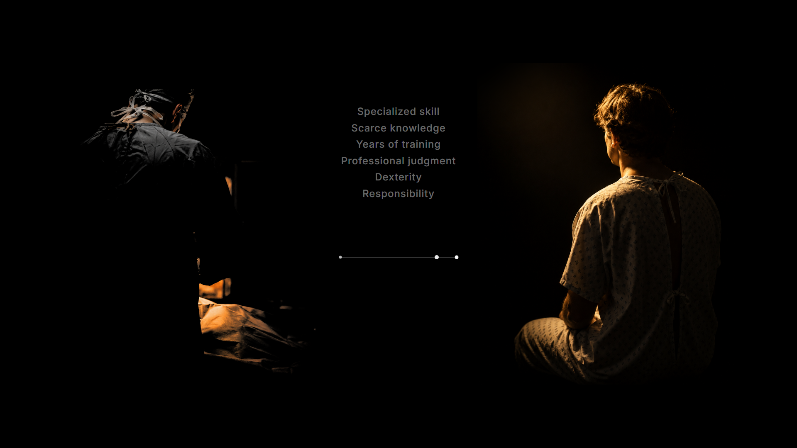
Beat 2 · APPROVED — s2-b2: the delivery arrived, the terminal lit, the capabilities at the floorBeat 3 · APPROVED — s2-b3-a: the wants; patient dimmed in place (D1-A), goods at his side (D2-A), the attempt
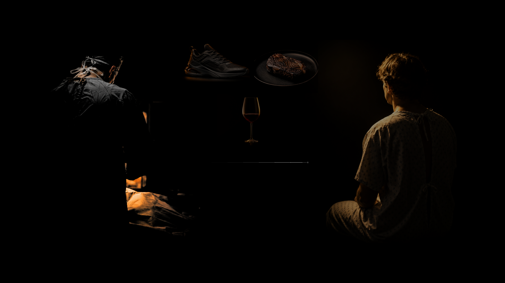
Beat 4 · APPROVED — s2-b4-c: the failure — the stroke thins and dies before arriving (D3-C)
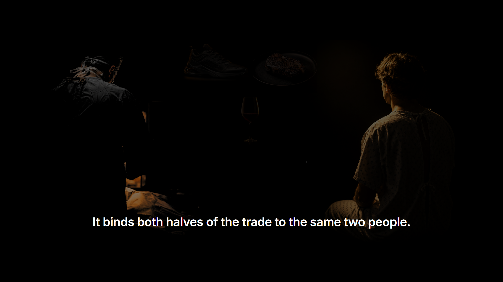
Beat 5 · APPROVED — s2-b5-b: the binding line; the two people stay legible as its anchor (D4-B)
Scene 3 — The Breakthrough (9 beats)
Beat 1 · APPROVED — s3-b1-c: the birth, mid-contraction, the remnant in language CBeat 2 · APPROVED — s3-b2: the contraction completeBeat 3 · APPROVED — s3-b3: the patient releasedBeat 4 · APPROVED — s3-b4-a: SOMEONE ELSE at full voice (D6-A)Beat 5 · APPROVED — s3-b5-a: SOMEWHERE ELSE lands; SOMEONE ELSE demotesBeat 6 · APPROVED — s3-b6-a: LATER lands — s3-f2-a exactly
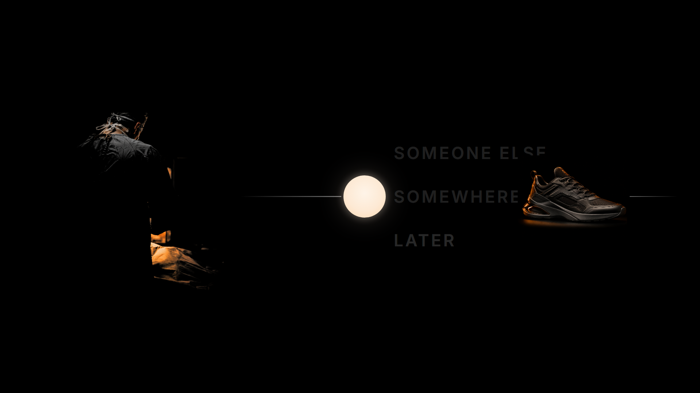
Beat 7 · APPROVED — s3-b7-b: the completion as two phases in one frame (D5-B)Beat 8 · APPROVED — s3-b8-a: the reset to the held claim
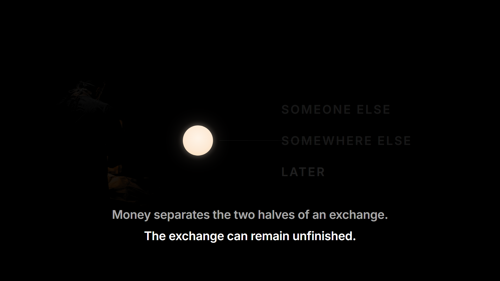
Beat 9 · APPROVED — s3-b9-a: the full handoff to clean black under the pair (D4-A)
Scene 4 — Spend or Save (5 beats)
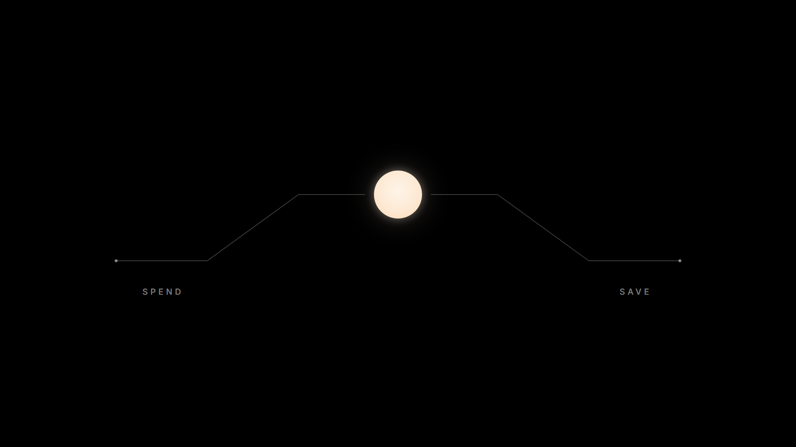
Beat 1 · APPROVED — s4-b1-b: the symmetric fork, both roads real, neither taken (D7-B)
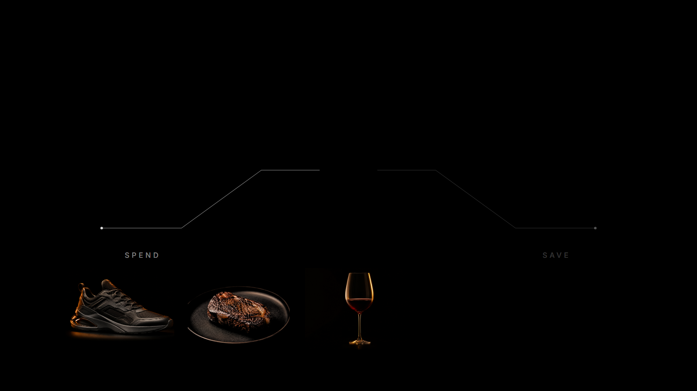
Beat 2 · APPROVED — s4-b2-b: the spend road taken; the goods at its end; the save road dormant
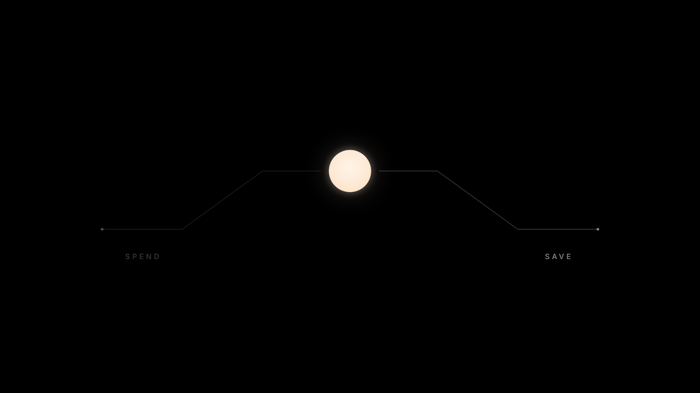
Beat 3 · APPROVED — s4-b3-b: the fork re-posed; the spend road subdued by its own tellingBeat 4 · APPROVED — s4-b4-b: the claim rests on the save road; the road continues into unseen timeBeat 5 · APPROVED — s4-b5-b: the pair lands beneath the held road
The ruled gestures, mid-flight
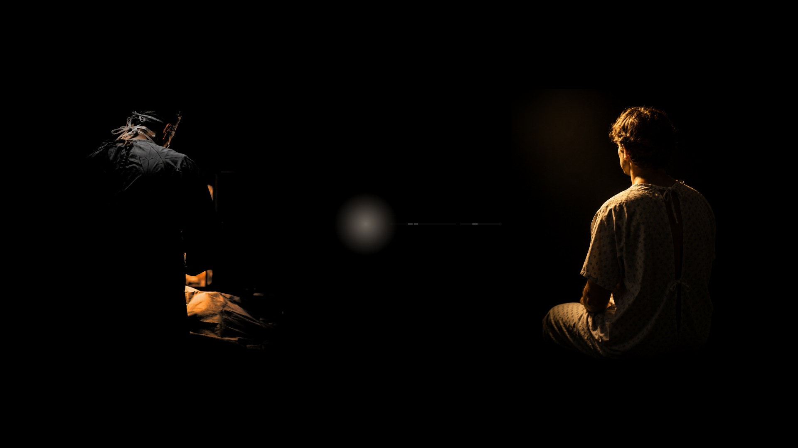
The pool birth · early — the light draining into the pool
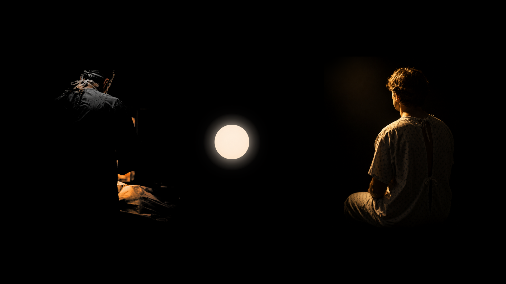
The pool birth · late — the form about to crystallize
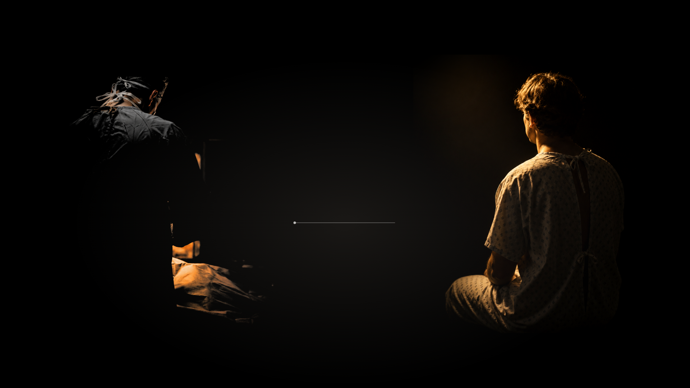
The S2 entry · early — light rising, the path drawing
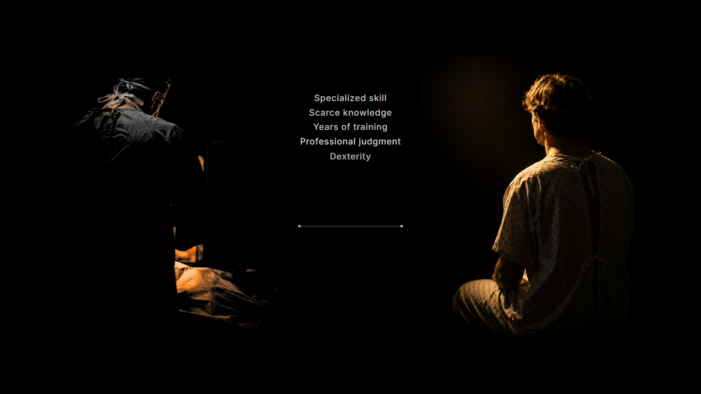
The S2 entry · late — the capabilities landing under his voice
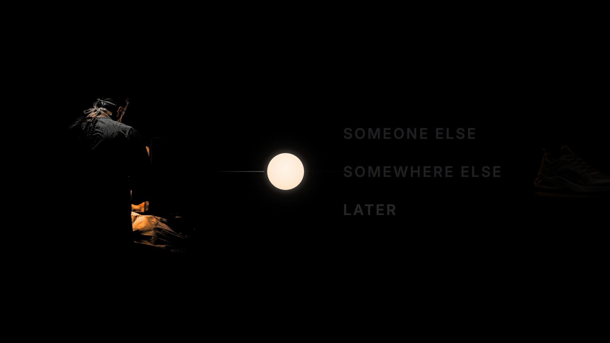
The completion · early — the claim departs; the shoes enter
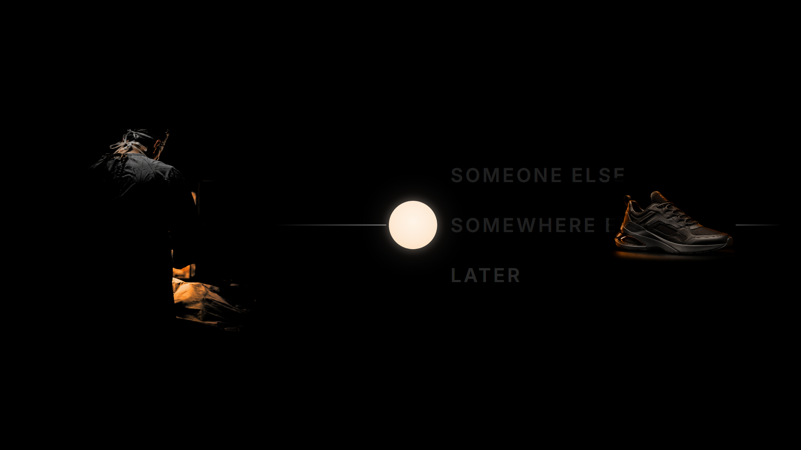
The completion · late — two events, opposite directions, about to freeze